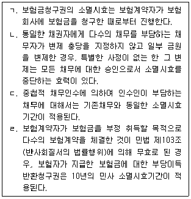
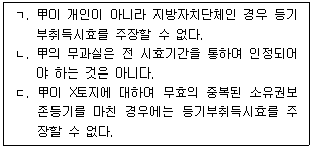
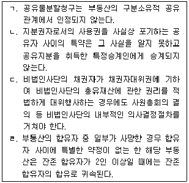
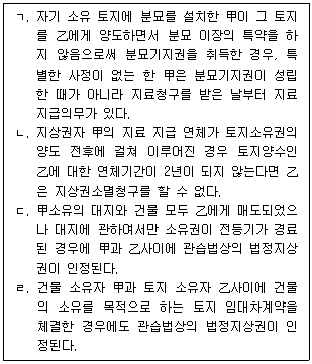
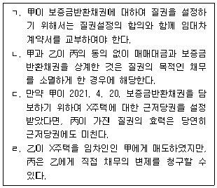
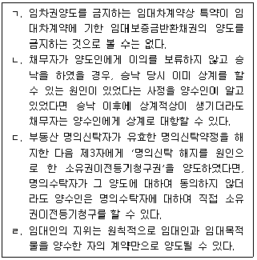
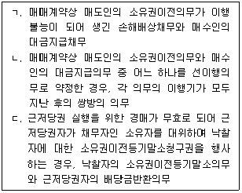
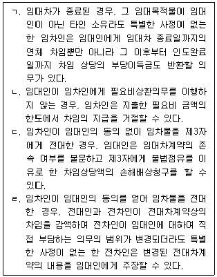

변리사-1차(2교시) (2023-02-18 기출문제)
1. 가상화폐 투자에 실패한 甲은 부인 乙을 볼 면목이 없어 2015. 9. 15. 지리산으로 들어가 누구와도 연락을 하지 않았다. 甲의 생사를 알지 못한 乙은 2021. 9. 7. 법원에 실종선고를 청구하여 2022. 3. 10. 실종선고가 되었다. 甲의 실종선고로 甲에 대한 사망보험금 5억 원을 수령한 乙은 주식에 투자하여 큰 손실을 보았다. 지리산에서 삶의 새로운 목표를 찾은 甲은 2023. 2. 5. 집으로 돌아왔다. 이에 관한 설명으로 옳은 것은? (다툼이 있으면 판례에 따름)
- 실종선고로 甲의 사망이 의제된 시점은 2022. 3. 10.이다.
- 甲의 실종선고가 취소되지 않더라도 甲이 살아 있는 것이 증명되었으므로, 보험회사는 乙을 상대로 한 사망보험금 반환소송에서 승소할 수 있다.
- 甲에 대한 실종선고가 취소되면, 선의인 乙은 현존이익 한도에서 보험금을 반환하면 된다.
- 실종선고를 취소하지 않는 한, 甲은 공직선거권이 없다.
- 법원에 의해 甲의 실종선고가 취소되면, 그 때부터 장래를 향하여 甲에 대한 실종선고의 효력이 부정된다.
(정답률: 알수없음)

2. 2022. 1. 12. 당시 18세 1개월이었던 甲은 법정대리인 丁의 동의 없이, 자신이 소유하는 상가건물을 乙에게 매도하는 매매계약을 체결하였다. 그 후 甲은 2022. 3. 12. 丙과 혼인하였으나, 6개월 후인 2022. 9. 12. 이혼을 하였다. 이에 관한 설명으로 옳지 않은 것은? (다툼이 있으면 판례에 따름)
- 2023. 2. 18. 현재 甲은 이미 성년이 되었으므로, 매매계약을 취소할 수 없다.
- 만일 甲이 2022. 2. 17. 丁의 동의 없이 매매계약을 추인하였더라도, 甲은 위 매매계약을 취소할 수 있다.
- 만일 甲이 2022. 5. 15. 丁의 동의 없이 매매계약을 추인한 경우, 그 추인은 유효하다.
- 만일 甲이 2022. 10. 5. 아무런 이의를 제기하지 않고 乙로부터 매매대금을 수령한 경우, 매매계약을 취소할 수 없다.
- 2023. 2. 18. 현재 甲은 위 매매계약을 丁의 동의 없이 유효하게 추인할 수 있다.
(정답률: 알수없음)
3. 민법상 법인에 관한 설명으로 옳지 않은 것은?
- 생전처분으로 재단법인을 설립하는 때에는 증여에 관한 규정을 준용한다.
- 유언으로 재단법인을 설립하는 때에는 출연재산(지명채권)은 유언의 효력이 발생한 때로부터 법인에 귀속한 것으로 본다.
- 이사의 대표권에 대한 제한은 이를 등기하지 아니하면 그 효력이 없다.
- 재단법인의 목적을 달성할 수 없는 때에는 설립자나 이사는 주무관청의 허가를 얻어 설립의 취지를 참작하여 그 목적 기타 정관의 규정을 변경할 수 있다.
- 재단법인의 설립자가 그 명칭, 사무소소재지 또는 이사임면의 방법을 정하지 아니하고 사망한 때에는 이해관계인 또는 검사의 청구에 의하여 법원이 이를 정한다.
(정답률: 알수없음)
4. 동일소유자에게 속하는 다음 물건 중 주물과 종물의 관계로 보기 어려운 것은? (다툼이 있으면 판례에 따름)
- 배와 노
- 자물쇠와 열쇠
- 주유소건물과 주유기
- 횟집과 수족관
- 주유소부지와 그 지하에 매설된 유류저장탱크
(정답률: 알수없음)
5. 민법상 기간의 계산으로 옳지 않은 것은? (다툼이 있으면 판례에 따름)
- 2023년 2월 10일(금요일) 오후 10시 30분부터 12시간이라고 한 경우, 기간의 만료점은 2023년 2월 11일(토요일) 오전 10시 30분이 된다.
- 2004년 1월 17일 오후 2시에 태어난 甲이 성년이 되는 시점은 2023년 1월 17일 24시이다.
- 2022년 11월 30일 오전 10시부터 3개월이라고 한 경우, 기간의 만료점은 2023년 2월 28일(화요일) 24시이다.
- 2023년 5월 1일부터 10일간이라고 한 경우, 기간의 만료점은 2023년 5월 10일(수요일) 24시이다.
- 사원총회소집일 1주일 전에 통지를 발송하도록 한 경우, 사원총회소집일이 2023년 3월 10일(금요일) 오후 2시면 소집통지를 늦어도 3월 2일 24시까지 발송하여야 한다.
(정답률: 알수없음)
6. 소멸시효에 관한 설명으로 옳지 않은 것을 모두 고른 것은? (다툼이 있으면 판례에 따름)

- ㄱ, ㄷ
- ㄱ, ㄹ
- ㄴ, ㄷ
- ㄴ, ㄹ
- ㄱ, ㄷ, ㄹ
(정답률: 알수없음)
7. 민법 제104조의 불공정한 법률행위에 관한 설명으로 옳은 것은? (다툼이 있으면 판례에 따름)
- 행정기관에 진정서를 제출하여 상대방을 궁지에 빠뜨린 다음 이를 취하하는 조건으로 거액의 급부를 제공받기로 약정한 것은 불공정한 법률행위에 해당한다.
- 법률행위의 성립시에는 존재하지 않았던 급부간의 현저한 불균형이 그 이후 외부적 사정의 급격한 변화로 인하여 발생하였다면 다른 요건이 충족되는 한 그때부터 불공정한 법률행위가 인정된다.
- 불공정한 법률행위의 성립요건으로 요구되는 무경험이란 일반적인 생활체험의 부족이 아니라 해당 법률행위가 행해진 바로 그 영역에서의 경험 부족을 의미한다.
- 법률행위가 현저히 공정을 잃었고, 어느 한 당사자에게 궁박의 사정이 존재한다고 하여도 그 상대방에게 이러한 사정을 이용하려는 폭리행위의 악의가 없었다면 불공정한 법률행위는 인정되지 않는다.
- 불공정한 법률행위를 할 때 당사자간에 그 법률행위의 불공정성을 이유로 하여 법률행위의 효력을 다툴 수 없다는 합의가 함께 행해졌다면 그러한 합의는 유효하다.
(정답률: 알수없음)
8. 통정허위표시에 관한 설명으로 옳지 않은 것은? (다툼이 있으면 판례에 따름)
- 통정허위표시에 의한 법률행위도 채권자취소권의 대상인 사해행위가 될 수 있다.
- 임대차보증금반환채권을 담보할 목적으로 임대인과 임차인이 체결한 전세권설정계약은 특별한 사정이 없는 한 임대차계약의 내용과 양립할 수 없는 범위에서만 통정허위표시로 인정된다.
- 차명(借名)으로 대출받으면서 명의대여자에게는 법률효과를 귀속시키지 않기로 하는 합의가 대출기관과 실제 차주 사이에 있었다면 명의대여자의 명의로 작성된 대출계약은 통정허위표시이다.
- 통정허위표시에 따른 선급금 반환채무 부담행위에 기하여 선의로 그 채무를 보증한 자는 보증채무의 이행 여부와 상관없이 허위표시의 무효로부터 보호받는 제3자에 해당한다.
- 파산관재인은 그가 비록 통정허위표시에 대해 악의였다고 하더라도 파산채권자 모두 가 악의로 되지 않는 한 선의의 제3자로 인정된다.
(정답률: 알수없음)
9. 착오로 인한 의사표시에 관한 설명으로 옳지 않은 것은? (다툼이 있으면 판례에 따름)
- 법률행위의 자연적 해석이 행해지는 경우, 표시상의 착오는 문제될 여지가 없다.
- 의사의 수술 후 환자에게 새로이 발생한 증세에 대하여 그 책임소재와 손해배상 여부를 둘러싸고 분쟁이 있다가 화해계약이 체결되었다면, 이후에 그 증세가 수술로 인한 것이 아니라는 것이 밝혀졌더라도 의사는 착오를 이유로 위 화해계약을 취소할 수 없다.
- 해제되어 이미 실효된 계약도 착오취소의 대상이 될 수 있다.
- 착오가 법률행위 내용의 일부에만 관계된 경우라면 일부무효의 법리가 유추적용되어 일부취소가 인정될 수도 있다.
- 예술품의 위작(僞作)을 진품으로 착각한 매도인의 말을 믿고서 과실 없이 진품에 상응하는 가격으로 그 위작을 구입한 매수인이 매도인에게 하자담보책임을 물을 수 있다면 그는 착오취소를 주장할 수 없다.
(정답률: 알수없음)
10. 민법상 대리에 관한 설명으로 옳은 것은? (다툼이 있으면 판례에 의함)
- 대리권은 대리인의 권리이자 의무의 성격을 갖는다.
- 대리권 남용에 대해 진의 아닌 의사표시에 관한 민법 제107조 제1항 단서가 유추적용 되는 경우, 선의의 제3자 보호에 관한 동조 제2항도 함께 유추적용된다.
- 복대리인은 본인의 대리인이므로 원대리인의 복임행위는 본인을 위한 대리행위이다.
- 대리권이 이미 소멸한 원대리인에 의해 선임된 복대리인의 대리행위에 대해서는 대리권 소멸 후의 표현대리(제129조)가 성립할 여지가 없다.
- 자신에게 유효한 대리권이 있다고 과실 없이 믿었던, 행위능력 있는 선의의 무권대리인은 본인의 추인이 없더라도 상대방에 대한 무권대리인의 책임에 관한 민법 제135조에 따른 책임을 지지 않는다.
(정답률: 알수없음)
11. 부동산 거래신고 등에 관한 법률에 따른 토지거래허가구역 내에 존재하는 토지에 대하여 매도인 甲과 매수인 乙사이에 허가를 전제로 하여 매매계약이 체결되었으며 계약 당시 乙은 甲에게 계약금을 지급하였다. 이에 관한 설명으로 옳지 않은 것은? (다툼이 있으면 판례에 따름)
- 甲과 乙이 관할관청으로부터 허가를 받으면 유동적 무효상태에 있던 위 매매계약은 소급해서 유효로 된다.
- 乙의 매수인 지위를 丙이 이전받는다는 취지의 약정을 甲, 乙, 丙이 한 경우, 그와 같은 합의는 甲과 乙간의 위 매매계약에 관한 관할관청의 허가가 있어야 비로소 효력이 발생한다.
- 보전의 필요성이 인정되는 한 乙은 甲에 대한 토지거래허가 신청절차의 협력의무 이행청구권을 피보전권리로 하여 甲의 권리를 대위 행사할 수 있다.
- 甲과 乙이 관할관청에 토지거래허가를 신청하여 그 허가를 받은 후에도 乙은 다른 사유가 없는 한 계약금을 포기하고 위 매매계약을 해제할 수 있다.
- 乙은 특별한 사정이 없는 한 위 매매계약의 허가를 받기 전까지 부당이득반환청구권을 행사하여 甲에게 이미 지급한 계약금의 반환을 청구할 수 있다.
(정답률: 알수없음)
12. 조건과 기한에 관한 설명으로 옳지 않은 것은? (다툼이 있으면 판례에 따름)
- 이행지체의 경우 채권자는 채무자를 상대로 상당한 기간을 정하여 이행을 청구하면서 그 기간 내에 이행이 없으면 계약은 당연히 해제된 것으로 한다는 취지의 해제조건부해제권 행사를 할 수 있다.
- 동산에 대한 소유권유보부 매매의 경우 물권행위인 소유권이전의 합의가 매매대금의 완납을 정지조건으로 하여 성립한다.
- 부첩(夫妾)관계의 종료를 해제조건으로 하는 증여계약은 무효이다.
- 불확정기한의 경우 기한사실의 발생이 불가능한 것으로 확정되어도 기한은 도래한 것으로 본다.
- 기한이익 상실의 특약은 특별한 사정이 없는 한 형성권적 기한이익 상실의 특약으로 추정된다.
(정답률: 알수없음)
13. 甲은 X토지에 대하여 등기부취득시효를 주장하고 있다. 이에 관한 설명으로 옳은 것을 모두 고른 것은? (다툼이 있으면 판례에 따름)

- ㄱ
- ㄴ
- ㄱ, ㄴ
- ㄴ, ㄷ
- ㄱ, ㄴ, ㄷ
(정답률: 알수없음)
14. 물권변동에 관한 설명으로 옳지 않은 것은? (다툼이 있으면 판례에 따름)
- 미등기건물에 대한 양도담보계약상의 채권자의 지위를 승계하여 건물을 관리하고 있는 자는 그 건물에 대한 철거처분권을 가진 자에 해당한다.
- 부동산 합유지분의 포기가 적법하더라도 그에 관한 등기가 경료되지 않았다면 그 포기된 합유지분은 나머지 잔존 합유지분권자들에게 귀속되지 않는다.
- 동산의 선의취득에서 물권적 합의가 동산의 인도보다 먼저 행하여진 경우 양수인의 선의ㆍ무과실의 판단시점은 인도된 때를 기준으로 한다.
- 소유권이전의 약정을 내용으로 하는 화해조서는 민법 제187조(등기를 요하지 아니하는 부동산물권취득)의 판결에 포함되지 않는다.
- 공유물분할의 조정절차에서 공유자 사이에 공유토지에 관한 현물분할의 협의가 성립하여 그 합의사항을 조서에 기재함으로써 조정이 성립하더라도 등기없이 그 협의에 따른 새로운 법률관계가 창설되는 것은 아니다.
(정답률: 알수없음)
15. 점유자 甲의 권리관계 등에 관한 설명으로 옳은 것은? (다툼이 있으면 판례에 따름)
- 甲이 부동산을 증여받아 점유를 개시한 이후에 그 증여가 무권리자에 의한 것임을 알았더라도 그 점유가 타주점유가 된다고 볼 수 없다.
- 甲의 통상의 필요비 청구가 부정되는 민법 제203조(점유자의 상환청구권) 제1항 단서규정은 과실수취권이 없는 악의의 점유자에 대해서도 적용된다.
- 민법 제203조(점유자의 상환청구권) 제2항에서 유익비의 상환범위는 甲이 유익비로 지출한 금액과 현존하는 증가액 중에서 甲이 선택하는 것으로 정해진다.
- 점유물이 甲의 책임있는 사유로 인하여 멸실한 경우, 민법 제202조(점유자의 회복자에 대한 책임)에 따르면 甲이 악의의 점유자로서 부담하는 손해배상범위와 선의이면서 타주점유자로서 부담하는 손해배상범위는 다르다.
- 점유를 침탈당한 甲이 본권인 유치권 소멸에 따른 손해배상청구권을 행사하는 때에는 점유를 침탈당한 날부터 1년 내에 행사해야만 한다.
(정답률: 알수없음)
16. 부동산에 관한 등기 또는 등기청구권 등에 관한 설명으로 옳지 않은 것은? (다툼이 있으면 판례에 따름)
- 甲→乙→丙의 순으로 매매계약이 체결된 경우, 3자간 중간생략등기의 합의가 있더라도 乙의 甲에 대한 소유권이전등기청구권이 소멸되는 것은 아니다.
- 가등기에 의하여 순위 보전의 대상이 되어 있는 물권변동청구권이 양도된 경우, 양도인과 양수인의 공동신청으로 그 가등기상 권리의 이전등기를 가등기에 대한 부기등기의 형식으로 경료할 수 있다.
- 무효인 3자간 등기명의신탁에서 부동산을 매수하여 인도받아 계속 점유하는 명의신탁자의 매도인에 대한 소유권이전등기청구권은 소멸시효에 걸리지 않는다.
- 매수인의 매도인에 대한 소유권이전청구권 보전을 위한 가등기가 경료된 경우, 소유권이전등기를 청구할 어떤 법률관계가 있다고 추정되지 않는다.
- ｢임야소유권 이전등기에 관한 특별조치법｣에 의한 소유권보존등기가 경료된 임야에 관하여 그 임야를 사정받은 사람이 따로 있는 것이 사후에 밝혀졌다면, 그 등기는 실체적 권리관계에 부합하는 등기로 추정되지 않는다.
(정답률: 알수없음)
17. 공동소유관계에 관한 설명으로 옳은 것을 모두 고른 것은? (다툼이 있으면 판례에 따름)

- ㄱ, ㄹ
- ㄱ, ㄴ, ㄷ
- ㄱ, ㄴ, ㄹ
- ㄴ, ㄷ, ㄹ
- ㄱ, ㄴ, ㄷ, ㄹ
(정답률: 알수없음)
18. 지상권에 관한 설명으로 옳지 않은 것을 모두 고른 것은? (다툼이 있으면 판례에 따름)

- ㄱ, ㄴ
- ㄱ, ㄷ
- ㄷ, ㄹ
- ㄱ, ㄷ, ㄹ
- ㄴ, ㄷ, ㄹ
(정답률: 알수없음)
19. 甲은 2021. 5. 19. 乙과 X상가를 임대차보증금 1억 원, 임대차기간 2021. 6. 19.부터 2026. 6. 18.까지, 차임 월 300만 원으로 정하여 임대차계약을 체결하였고, 계약 당일 乙로부터 보증금 전액을 지급 받으면서 보증금의 반환을 담보하기 위하여 乙의 명의로 전세권을 설정해 주었다. 그 후 乙은 丙에게 8천만 원을 차용하면서 위 전세권에 관하여 채권최고액 1억 원의 근저당권설정등기를 마쳐주었다. 이에 관한 설명으로 옳은 것은? (다툼이 있으면 판례에 따름)
- 甲이 보증금의 반환을 담보하기 위하여 전세권을 설정하면서 이와 동시에 목적물을 인도하지 않았으므로 전세권의 설정은 효력이 없다.
- 전세금의 지급은 전세권 성립의 요소가 되는 것이므로 전세금을 현실적으로 지급하지 않고 기존의 채권으로 대신할 수 없다.
- 乙이 차임의 지급을 연체하는 경우 甲은 연체된 차임을 보증금에서 공제할 수 있다.
- 임대차보증금의 반환을 담보하기 위하여 전세권설정등기가 경료되었음을 丙이 알지 못한 경우에도 甲은 연체차임의 공제를 가지고 丙에게 대항할 수 있다.
- 전세권의 존속기간이 만료되면 丙은 X상가에 대한 전세권저당권을 실행하는 방법으로 乙에 대한 대여금채권을 회수하여야 한다.
(정답률: 알수없음)
20. 민사유치권에 관한 설명으로 옳은 것은? (다툼이 있으면 판례에 따름)
- 채무자는 상당한 담보를 제공하고 유치권의 소멸을 청구할 수 있는데, 유치물 가액이 피담보채권액보다 적을 경우에는 피담보채권액에 해당하는 담보를 제공하여야 한다.
- 유치권자가 유치물에 대한 점유를 빼앗긴 경우에도 점유물반환청구권을 보유하고 있다면 점유를 회복하기 전에도 유치권이 인정된다.
- 유치권의 존속 중에 유치물의 소유권이 제3자에게 양도된 경우에는 유치권자는 그 제3자에 대하여 유치권을 행사할 수 없다.
- 유익비상환청구권을 담보하기 위하여 유치권을 행사하고 있는 경우에도, 법원이 유익비상환청구에 대하여 상당한 상환기간을 허락하면 유치권이 소멸한다.
- 수급인은 도급계약에 따라 자신의 재료와 노력으로 건축된 자기 소유의 건물에 대해서도 도급인으로부터 공사대금을 지급받을 때까지 유치권을 가진다.
(정답률: 알수없음)
21. 甲은 2021. 3. 6. 乙로부터 X주택을 보증금 10억 원에 임차하였고, 2021. 3. 13. 丙으로부터 6억 원을 대출받으면서 보증금반환채권 중 8억 원에 대하여 질권을 설정해 주었으며, 乙은 이를 승낙하였다. 乙은 2022. 6. 30. 甲에게 X주택을 15억원에 매도하면서, 甲으로부터 보증금을 제외한 잔액을 지급받고서 소유권이전등기절차를 마쳐주었다. 이에 관한 설명으로 옳은 것을 모두 고른 것은? (다툼이 있으면 판례에 따름)

- ㄱ, ㄴ
- ㄱ, ㄷ
- ㄱ, ㄹ
- ㄴ, ㄷ
- ㄴ, ㄹ
(정답률: 알수없음)
22. 민법상 저당권의 효력이 미치는 목적물의 범위에 관한 설명으로 옳지 않은 것은? (다툼이 있으면 판례에 따름)
- 경매절차의 매수인이 증축부분의 소유권을 취득하기 위해서는 부합된 증축부분이 기존건물에 대한 경매절차에서 경매목적물로 평가되어야 한다.
- 건물의 증축부분이 저당목적물인 기존의 건물에 부합한 경우에는 특별한 사정이 없는 한 저당권의 효력이 증축부분에도 미친다.
- 어떤 물건이 저당권이 설정된 후에 저당목적물의 종물이 된 경우에도 그 종물에 대하여 저당권의 효력이 미친다.
- 건물의 소유를 목적으로 하여 토지를 임차한 사람이 그 건물에 저당권을 설정한 때에는, 저당권의 효력은 그 건물의 소유를 목적으로 한 토지임차권에도 미친다.
- 특별한 사정이 없는 한 저당목적물인 건물에 대한 저당권자의 압류가 있으면 저당권 설정자의 건물 임차인에 대한 차임채권에 저당권의 효력이 미친다.
(정답률: 알수없음)
23. 근저당권에 관한 설명으로 옳지 않은 것은? (다툼이 있으면 판례에 따름)
- 결산기에 확정된 채권액이 채권최고액을 넘는 경우, 채무자 겸 근저당권설정자는 최고액을 임의로 변제하더라도 근저당권등기의 말소를 청구할 수 없다.
- 공동근저당권자가 X건물과 Y건물에 대하여 공동저당을 설정한 후, 제3자가 신청한 X건물에 대한 경매절차에 참가하여 배당을 받으면, Y건물에 대한 피담보채권도 확정된다.
- 공동근저당권자가 후순위근저당권자에 의하여 개시된 경매절차에서 피담보채권의 일부를 배당받은 경우, 우선변제 받은 금액에 관하여는 다시 공동근저당권자로서 우선 변제권을 행사할 수 없다.
- 원본의 이행기일을 경과한 후 발생하는 지연손해금 중 1년이 지난 기간에 대한 지연손해금도 근저당권의 채권최고액 한도에서 전액 담보된다.
- 근저당권의 피담보채권인 원본채권이 확정된 후에 발생하는 이자나 지연손해금 채권은 그 근저당권의 채권최고액의 범위에서 여전히 담보된다.
(정답률: 알수없음)
24. 가등기담보 등에 관한 법률상 가등기담보권의 실행에 관한 설명으로 옳은 것은? (다툼이 있으면 판례에 따름)
- 가등기담보권자가 목적물의 소유권을 취득하려면 담보설정 당시 목적물의 평가액과 피담보채권액의 범위를 밝혀야 한다.
- 가등기담보권자의 청산금 지급채무와 가등기담보권설정자의 소유권이전등기 및 인도채무는 동시이행관계에 있다.
- 목적부동산의 평가액이 채권액에 미달하여 청산금이 없다고 인정되는 때에는 그 뜻을 채무자에게 통지할 필요가 없다.
- 채권자가 담보목적부동산에 관하여 이미 소유권이전등기를 마친 경우에는 청산금을 채무자에게 지급하지 않더라도 담보목적부동산의 소유권을 취득한다.
- 채권자가 평가한 청산금의 액수가 정당하게 평가된 청산금의 액수에 미치지 못하는 경우에는 담보권 실행통지로서의 효력이 없다.
(정답률: 알수없음)
25. 채무불이행에 관한 설명으로 옳지 않은 것은? (다툼이 있으면 판례에 따름)
- 계약당사자 일방이 자신의 계약상 채무 이행에 장애가 될 수 있는 사유를 계약체결 시에 예견할 수 있었음에도 상대방에게 고지하지 않은 경우, 그 사유로 인해 채무불이행이 되는 것에 어떠한 잘못도 없었다면 채무불이행에 대한 귀책사유를 인정할 수 없다.
- 이행보조자의 행위가 채무자의 이행업무와 객관적, 외형적으로 관련된 경우, 그 행위가 채권자에게 불법행위가 되더라도 채무자는 채권자에 대하여 책임을 부담한다.
- 매매목적물의 인도전 화재로 매도인이 수령할 화재보험금에 대하여 매수인이 대상청구권을 행사할 수 있는 경우, 그 범위는 매매대금의 범위내로 제한되지 않는다.
- 대상청구권을 행사하려는 일방당사자가 부담하는 급부도 전부불능이 된 경우, 대상청구권의 행사는 허용되지 않는다.
- 이행기의 정함이 없는 채권을 양수한 자가 채무자를 상대로 이행의 소를 제기하고 소송계속 중 채무자에 대하여 채권양도통지가 된 경우, 채무자는 원칙적으로 그 통지가 도달된 다음 날부터 이행지체책임을 진다.
(정답률: 알수없음)
26. 채권자대위권에 관한 설명으로 옳은 것은? (다툼이 있으면 판례에 따름)
- 채권자는 피보전채권의 변제기 전에 채권자대위권을 행사해서 피대위채권의 시효중단을 위한 이행청구를 하지 못한다.
- 임대인의 동의없는 임차권의 양도는 당사자 사이에서는 유효하므로 임차권의 양수인은 임대인의 권한을 대위 행사할 수 있다.
- 조합원이 조합을 탈퇴할 권리는 일신전속적 권리가 아니므로, 특별한 사정이 없는 한 피대위권리가 될 수 있다.
- 채권자가 채무자의 토지 소유권이전등기청구권을 대위행사한 후 이를 채무자에게 통지한 경우, 채무자가 그 토지 소유권을 이전받는 것은 처분권제한에 위배되어 무효이다.
- 제3채무자가 직접 대위채권자에게 금전을 지급하도록 하는 채권자대위소송의 판결이 확정된 경우, 대위채권자의 채권자는 대위채권자가 제3채무자로부터 지급받을 권리를 압류할 수 있다.
(정답률: 알수없음)
27. 채권자취소권에 관한 설명으로 옳지 않은 것은? (다툼이 있으면 판례에 따름)
- 채권자취소권은 재판상으로만 행사할 수 있다.
- 채권자가 채무자 소유의 부동산에 저당권을 설정받아 채권전액에 대한 우선변제권을 확보하고 있다면, 그 채무의 수탁보증인은 사전구상권을 피보전권리로 하여 채무자의 법률행위를 사해행위로 취소하지 못한다.
- 저당권이 설정된 부동산이 사해행위로 양도된 후 그 저당권의 실행으로 양수인인 수익자에게 배당이 되었다면 취소채권자는 수익자를 상대로 배당금 상당액의 반환을 청구할 수 있다.
- 사해행위 취소로 등기명의를 회복한 부동산을 채무자가 제3자에게 처분한 경우, 취소채권자뿐만 아니라 사해행위 취소와 원상회복의 효력을 받는 채권자도 명의인을 상대로 등기의 말소를 청구할 수 있다.
- 취소채권자는 수익자가 사해행위로 취득한 근저당권에 배당된 배당금을 가압류한 수익자의 채권자에 대하여서도 우선하여 배당을 받을 수 있다.
(정답률: 알수없음)
28. 채권의 목적에 관한 설명으로 옳지 않은 것은? (다툼이 있으면 판례에 따름)
- 특정물채권의 채무자는 이행기에 이행하여도 손해를 면할 수 없는 경우가 아닌 한, 이행지체 중에 과실없이 목적물이 멸실되더라도 배상책임을 부담한다.
- 원본채권이 시효로 소멸한 경우 그로부터 발생한 지분적 이자채권도 함께 소멸한다.
- 금전채무불이행에 따른 통상손해배상의 경우 채권자는 자신의 손해를 증명할 필요가 없다.
- 채무자가 금전채무를 이행하지 않아 발생한 확정된 지연손해금에 대하여 채권자가 이행청구를 하는 경우 그 지연손해금에 대하여 다시 지연손해금의 지급을 구할 수는 없다.
- 무권대리에서 상대방이 그의 선택에 따라 행사할 수 있는 계약의 이행 또는 손해배상청구권은 선택권을 행사할 수 있는 때부터 소멸시효가 진행한다.
(정답률: 알수없음)
29. 甲은 乙로부터 5억 원을 차용하면서 자신의 X부동산(시가 3억 원)과 丙소유의 Y부동산(시가 4억 원)에 공동저당권을 설정하고, 丁에게 부탁하여 연대보증인이 되도록 하였다. 이에 관한 설명으로 옳지 않은 것은? (부동산의 시가 변동이 없고 이자 기타 비용은 고려하지 않으며, 다툼이 있으면 판례에 따름)
- 甲이 자신의 유일한 재산인 X부동산을 매도한 경우 甲의 일반채권자는 그 매매계약을 사해행위로 취소할 수 없다.
- 丁이 자신의 유일한 재산을 처분한 경우 乙은 이를 사해행위로 취소할 수 있다.
- 乙에게 2억 원을 변제한 丁은 丙에 대하여 변제자대위를 하지 못한다.
- 丙이 5억 원 전액을 변제한 후 대위등기를 하기 전에 B가 X부동산을 취득하여 소유권이전등기를 마친 상황이라면 丙은 B에 대하여 변제자대위를 할 수 없다.
- B가 X부동산을 취득하여 소유권이전등기를 마친 후 乙의 저당권실행경매로 B가 X부동산의 소유권을 상실하더라도 B는 丙은 물론 丁에 대하여도 변제자대위를 하지 못한다.
(정답률: 알수없음)
30. 채권의 양도 또는 계약 인수에 관한 설명으로 옳은 것을 모두 고른 것은? (다툼이 있으면 판례에 따름)

- ㄱ, ㄴ, ㄷ
- ㄱ, ㄴ, ㄹ
- ㄱ, ㄷ, ㄹ
- ㄴ, ㄷ, ㄹ
- ㄱ, ㄴ, ㄷ, ㄹ
(정답률: 알수없음)
31. 채무인수 등에 관한 설명으로 옳은 것은? (다툼이 있으면 판례에 따름)
- 이행인수인이 채권자에 대하여 채무자의 채무를 승인하더라도 특별한 사정이 없는 한 시효중단의 효력은 발생하지 않는다.
- 저당권이 설정된 부동산의 매수인이 피담보채무를 인수하면서 그 채무액을 매매대금에서 공제하기로 하고 잔액만을 지급한 경우, 특별한 사정이 없는 한 매수인은 잔금지급의무를 다한 것으로 볼 수 없다.
- 주택의 임차인이 대항력을 갖추었다면 그가 그 주택의 소유권을 취득하더라도 특별한 사정이 없는 한 임대인에 대한 보증금반환청구권은 혼동으로 소멸하지 않는다.
- 중첩적 채무인수에서 채무자와 인수인은 채권자에 대하여 원칙적으로 부진정연대채무 관계에 있다.
- 채무가 인수된 경우 특별한 사정이 없는 한 제3자가 제공한 담보물권도 함께 이전한다.
(정답률: 알수없음)
32. 채권의 소멸에 관한 설명으로 옳지 않은 것은? (다툼이 있으면 판례에 따름)
- 채무자가 채무액 일부를 지급하면서 이자 아닌 원본에 충당할 것을 지정하고 채권자가 이를 이의 없이 수령하여 묵시적 합의가 인정되는 때에는 지급된 금전은 원본에 충당된다.
- 원금채무는 소멸시효가 완성되지 않았으나 이자채무는 소멸시효가 완성된 상태에서 채무자가 변제충당을 지정하지 않고 채무의 일부를 변제한 때에는 특별한 사정이 없는 한 이자채무에 먼저 충당된다.
- 상계가 금지되는 채권이라고 하더라도 압류금지채권에 해당하지 않는 한 강제집행에 의한 전부명령의 대상이 될 수 있다.
- 피용자의 고의의 불법행위로 인하여 사용자책임이 성립하는 경우, 사용자는 자신의 고의가 없음을 주장하여 피해자의 손해배상채권을 수동채권으로 하는 상계권을 행사할 수 있다.
- 소멸시효가 완성된 채권이 그 완성 전에 상계할 수 있었던 것이면 채권자는 그 채권을 자동채권으로 하여 상계할 수 있다.
(정답률: 알수없음)
33. 동시이행관계가 인정되는 것을 모두 고른 것은? (특별한 사정이 없고, 다툼이 있으면 판례에 따름)

- ㄱ
- ㄴ
- ㄱ, ㄴ
- ㄴ, ㄷ
- ㄱ, ㄴ, ㄷ
(정답률: 알수없음)
34. 제3자를 위한 계약에 관한 설명으로 옳지 않은 것은? (다툼이 있으면 판례에 따름)
- 요약자는 원칙적으로 제3자의 권리와 별도로 낙약자에 대하여 제3자에게 급부를 이행할 것을 요구할 수 있는 권리를 가진다.
- 제3자가 수익의 의사표시를 한 경우, 계약의 당사자가 제3자의 권리를 임의로 변경ㆍ소멸시키는 행위를 하더라도 특별한 사정이 없는 한 제3자에 대하여 효력이 없다.
- 요약자와 수익자 사이의 법률관계(대가관계)의 효력 상실을 이유로 요약자는 낙약자와 요약자 사이의 법률관계(기본관계)상 낙약자에게 부담하는 채무의 이행을 거절할 수 있다.
- 채무자와 인수인 사이의 계약으로 체결되는 중첩적 채무인수의 경우, 채권자의 수익의 의사표시는 그 계약의 성립요건 또는 효력발생요건이 아니다.
- 낙약자와 요약자 사이의 계약(기본관계)이 무효가 된 경우, 낙약자는 특별한 사정이 없는 한 제3자를 상대로 그가 제3자에게 한 급부를 부당이득으로 반환 청구할 수 없다.
(정답률: 알수없음)
35. 계약의 해제, 해지에 관한 설명으로 옳지 않은 것은? (다툼이 있으면 판례에 따름)
- 타인 권리의 매매로 인한 담보책임으로 매수인이 계약을 해제한 경우, 매수인이 진정한 권리자인 타인에게 직접 목적물을 반환한 때에는 그 반환한 범위에서 매도인에게 반환할 의무를 부담하지 않는다.
- 사정변경을 이유로 한 계약의 해제나 해지에서 사정변경에 대한 예견가능성이 있었는지는 개별적 사정을 고려하지 않고 추상적ㆍ일반적으로 판단하여야 한다.
- 매수인의 사망으로 매수인의 지위를 상속한 상속인들이 매매계약을 해제하려면, 특별한 사정이 없는 한 전원이 해제의 의사표시를 하여야 한다.
- 조합계약에서는 계약을 해제 또는 해지하고 조합원에게 그로 인한 원상회복의 의무를 부담지울 수는 없다.
- 계약이 합의에 따라 해제되거나 해지된 경우, 특별한 사정이 없는 한 채무불이행으로 인한 손해배상을 청구할 수 없다.
(정답률: 알수없음)
36. 매매의 일방예약 또는 매매계약에 관한 설명으로 옳지 않은 것은? (다툼이 있으면 판례에 따름)
- 예약완결권을 재판상 행사하는 경우, 소장 부본이 제척기간 내에 상대방에게 송달되어야만 제척기간 내에 행사한 것으로 본다.
- 당사자들이 약정한 예약완결권의 행사기간은 그 매매예약이 성립한 때부터 10년을 초과하더라도 무방하다.
- 매매예약 성립 후 당사자일방의 매매예약 완결권의 행사 전에 상대방의 매매목적물이 멸실된 경우, 매매예약 완결의 의사표시가 있더라도 매매의 효력이 생기지 않는다.
- 계약이행의 착수가 있기 전에 매도인이 민법 제565조(해약금) 제1항에 따라 계약을 해제하려면, 계약금의 배액을 상환하거나 적어도 이행제공 상태에 두어야 한다.
- 매수인이 매매목적물을 대금지급 전에 인도받았다면 대금지급의무와 소유권이전등기의무가 동시이행관계에 있더라도 민법 제587조(과실의 귀속, 대금의 이자)에 의한 매매대금이자를 지급할 의무가 있다.
(정답률: 알수없음)
37. 임대차에 관한 설명으로 옳은 것을 모두 고른 것은? (다툼이 있으면 판례에 따름)

- ㄱ, ㄴ
- ㄷ, ㄹ
- ㄱ, ㄴ, ㄷ
- ㄱ, ㄴ, ㄹ
- ㄴ, ㄷ, ㄹ
(정답률: 알수없음)
38. 조합계약에 관한 설명으로 옳은 것은? (다툼이 있으면 판례에 따름)
- 조합재산을 구성하는 개개의 재산에 대한 합유지분을 압류 기타 강제집행의 대상으로 삼을 수 있다.
- 2인으로 구성된 조합에서 1인이 탈퇴하여 조합관계가 종료되는 경우, 특별한 사정이 없는 한 해산이나 청산을 거쳐야 조합재산은 남은 조합원의 단독소유에 속하게 된다.
- 2인으로 구성된 조합에서 1인이 존속기한을 정하지 않고 부동산 사용권을 출자하였다가 탈퇴한 경우, 특별한 사정이 없는 한 탈퇴 시 남은 조합원의 부동산 사용권은 소멸한다.
- 공동이행방식의 건설공동수급체의 구성원인 조합원이 그 출자의무를 불이행하면, 특별한 사정이 없는 한 출자의무의 불이행을 이유로 이익분배 자체를 거부할 수 있다.
- 조합원이 다른 조합원 전원의 동의 하에 조합지분을 양도하면, 조합원 지위의 변동은 조합지분의 양도양수에 관한 약정으로써 바로 효력이 생긴다.
(정답률: 알수없음)
39. 부당이득에 관한 설명으로 옳지 않은 것은? (다툼이 있으면 판례에 따름)
- 쌍무계약에서 당사자 쌍방의 귀책사유 없이 일방의 채무가 후발적으로 불능이 된 경우, 상대방은 이미 이행한 급부에 대하여 부당이득반환을 청구할 수 있다.
- 집행력 있는 정본을 가진 채권자가 배당요구의 종기까지 적법한 배당요구를 하지 않아 배당에서 제외된 경우, 배당금을 수령한 다른 채권자를 상대로 부당이득반환청구를 할 수 없다.
- 과세관청이 3자간 등기명의신탁에 따라 해당 부동산의 공부상 소유자가 된 명의수탁자에게 재산세 부과처분을 하여 명의수탁자가 재산세를 납부한 경우, 그는 명의신탁자나 그 상속인을 상대로 재산세 상당액에 대한 부당이득반환청구를 할 수 있다.
- 임차인이 임대차계약 종료 후 임대차건물을 계속 점유하였으나, 본래의 임대차계약상의 목적에 따라 사용ㆍ수익하지 아니하여 실질적인 이득을 얻은 바가 없는 경우, 임차인은 차임 상당의 부당이득반환의무를 부담하지 않는다.
- 송금의뢰인과 수취인 사이에 계좌이체의 원인이 되는 법률관계가 존재하지 않는데도 송금의뢰인의 착오송금으로 인해 수취인이 계좌이체금액에 해당하는 예금채권을 취득한 경우, 송금의뢰인이 수취인에 대하여 부당이득반환청구권을 갖는다.
(정답률: 알수없음)
40. 불법행위에 관한 설명으로 옳지 않은 것은? (다툼이 있으면 판례에 따름)
- 공동불법행위자들 중에 고의로 불법행위를 행한 자가 있는 경우, 모든 공동불법행위자가 과실상계의 주장을 할 수 없다.
- 위법행위 시점과 손해의 발생 시점에 시간적 간격이 있는 경우, 불법행위로 인한 재산상 손해에 대한 배상책임이 성립하는 시기는 손해의 발생 시점이다.
- 금전을 대여한 채권자가 고의 또는 과실로 이자제한법을 위반하여 최고이자율을 초과하는 이자를 받아 채무자에게 손해를 입힌 경우, 특별한 사정이 없는 한 불법행위가 성립한다.
- 민법 제756조(사용자의 배상책임)의 사용관계는 실제로 지휘ㆍ감독하고 있는지 여부에 의하여 결정되는 것이 아니라 객관적으로 지휘ㆍ감독을 하여야 할 관계에 있는지 여부에 따라 결정된다.
- 불법행위로 인한 손해배상채무는 특별한 사정이 없는 한 채무 성립과 동시에 지연손해금이 발생한다.
(정답률: 알수없음)